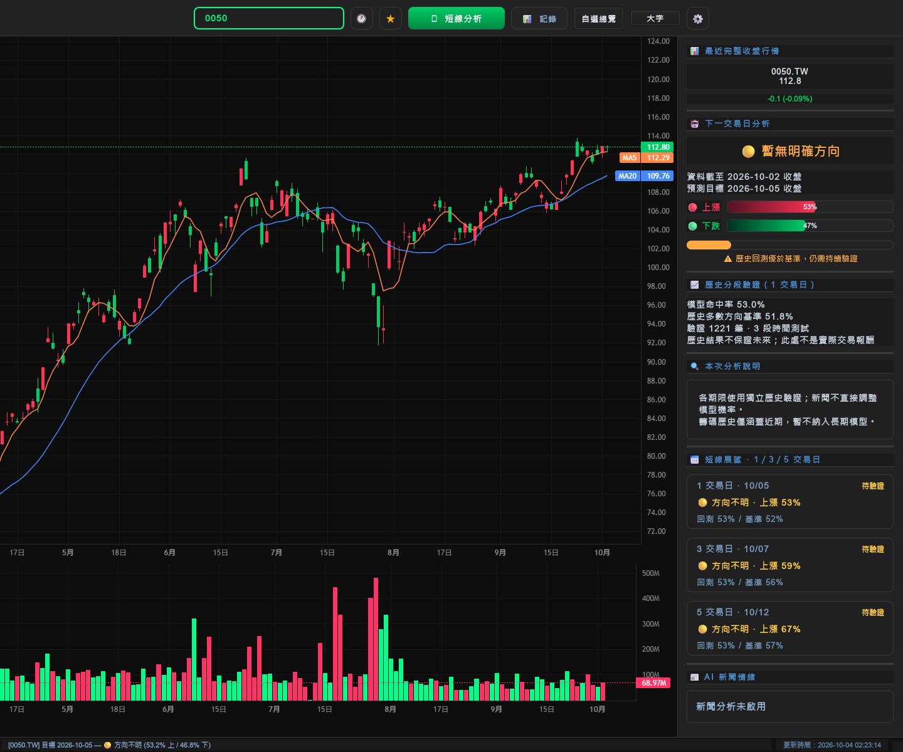
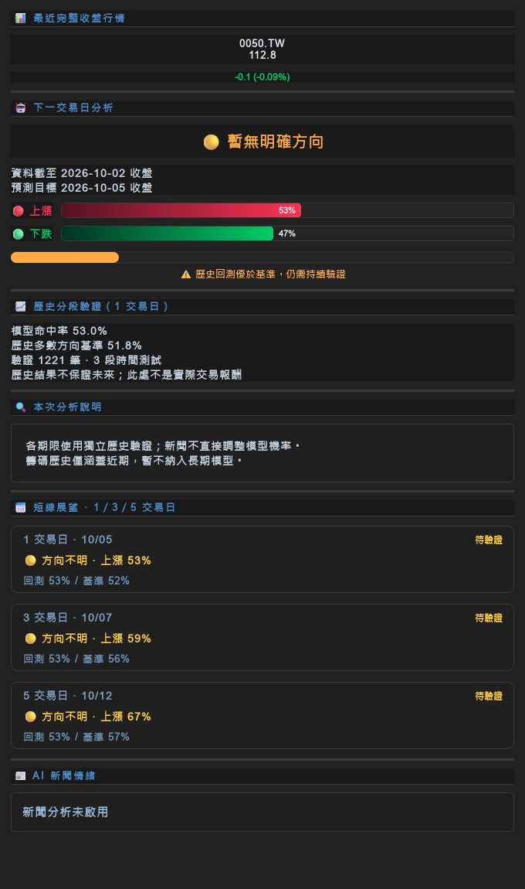
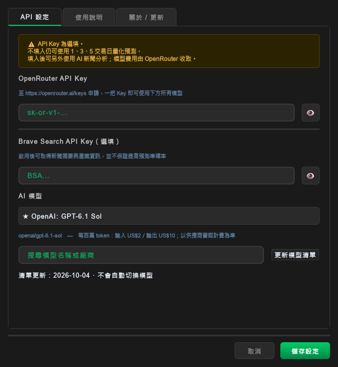

SHORT-TERM RESEARCH · WINDOWS
把隔天到幾天內的台股走勢，整理成看得懂的機率、日期與歷史驗證。給每天想多看一眼行情的人。
免費下載 Windows 版v1.7.2 · 完整 ZIP 約 351 MB · 發行 2026/10/05
GitHub 直接下載，免註冊帳號。版本紀錄與備用下載 →

一套免費的 Windows 台股研究工具。輸入股票代碼或名稱，例如 0050、2330，就能查看最近完整收盤行情，以及未來 1、3、5 個交易日相對於目前收盤價的漲跌機率。每個期限分開分析，搭配歷史驗證一起看。
v1.7.0 把短線分析重新整理：先確認資料是完整收盤，再分別評估不同期限，讓畫面上的數字和日期更容易核對。
以下為 v1.7.0 實際畫面：0050 資料截至 2026/10/02 收盤，於 2026/10/04 擷取。圖片可點擊放大；畫面中的機率僅代表當次分析。


開啟軟體後會檢查新版，也可以到設定 → 關於／更新手動檢查，跟著提示下載並重新啟動。目前使用完整更新包。v1.7.2 將更新包縮小約 48%，並加入下載中斷重試、保留進度與續傳；也保留手動檢查修正。
舊版的續傳功能要在成功升級後才會生效。如果更新仍無法完成，可用瀏覽器從這一頁下載完整 ZIP，先關閉舊程式，再解壓到新資料夾後啟動。程式會讀取同一個 Windows 使用者的設定、自選清單與記錄。
更新前建議備份個人資料：%LOCALAPPDATA%\台股預測分析系統\。舊版預測記錄會保留並備份，與新版各期限的統計分開計算。
| 作業系統 | Windows 10／11（64 位元） |
| 下載與空間 | 完整 ZIP 約 351 MB；v1.7.2 解壓後約 0.9 GB，建議預留至少 5 GB 供解壓、資料與更新使用。 |
| 網路 | 取得行情、新聞、模型清單與軟體更新需要連網。 |
| 安裝方式 | 解壓即用，已包含所需執行環境，不需安裝 Python。 |
| 軟體費用 | 軟體免費；基本量化分析不需要 AI API Key。 |
| OpenRouter | 選用，僅供 AI 新聞分析。到 OpenRouter 申請自己的 Key；模型可用性與費用依供應商及帳號而定。 |
| 可選 AI 模型 | 可搜尋 GPT、Claude、Gemini、Grok、DeepSeek、Qwen 等模型系列，並在設定更新清單及參考價格。 |
| Brave Search | Key 為選填；未填時使用備用新聞來源。找不到新聞時會顯示無可用新聞。 |
v1.7.2 · Windows 10／11 · 完整 ZIP 約 351 MB
版本紀錄與備用下載 →